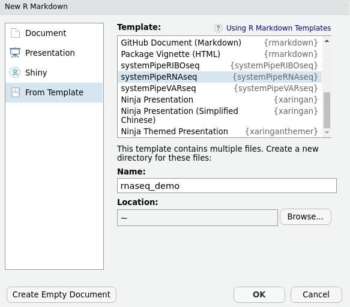

{kind=link}
Live Demo
| ## Install Package |
| Install the systemPipeRdata package from Bioconductor: |
r if (!requireNamespace("BiocManager", quietly=TRUE)) install.packages("BiocManager") BiocManager::install("systemPipeRdata") |
| ### Load Package and Documentation |
| Load package: |
r library("systemPipeRdata") |
| Access help: |
r library(help="systemPipeRdata") vignette("systemPipeRdata") |
Quick Start
Generate workflow template:
genWorkenvir(workflow="varseq")
setwd("varseq")Command-line alternative for generating workflow environments:
$ Rscript -e "systemPipeRdata::genWorkenvir(workflow='varseq', mydirname=NULL, url=NULL, urlname=NULL)"| ## Directory Structure |
The workflow templates generated by genWorkenvir contain the following preconfigured directory structure: |
 |
Workflows Collection
Browse pipelines that are currently available as part of the systemPipeR toolkit
.small[
| WorkFlow | Description | Version | GitHub | CI Testing |
|:———————–:|:—————-:|:—————-:|:——————–:|:——————————-:|
| systemPipeChIPseq | ChIP-Seq Workflow Template | v1.0  |
|  |
|  |
| systemPipeRIBOseq | RIBO-Seq Workflow Template | v1.0 | |
|
| systemPipeRIBOseq | RIBO-Seq Workflow Template | v1.0 | |  |
| systemPipeRNAseq | RNA-Seq Workflow Template | v1.0 | |
|
| systemPipeRNAseq | RNA-Seq Workflow Template | v1.0 | |  |
| systemPipeVARseq | VAR-Seq Workflow Template | v1.0 | |
|
| systemPipeVARseq | VAR-Seq Workflow Template | v1.0 | |  |
| systemPipeMethylseq | Methyl-Seq Workflow Template | devel
|
| systemPipeMethylseq | Methyl-Seq Workflow Template | devel  | |
| |  |
| systemPipeDeNovo | De novo transcriptome assembly Workflow Template | devel | |
|
| systemPipeDeNovo | De novo transcriptome assembly Workflow Template | devel | |  |
| systemPipeCLIPseq | CLIP-Seq Workflow Template | devel | |
|
| systemPipeCLIPseq | CLIP-Seq Workflow Template | devel | |  |
| systemPipeMetaTrans | Metatranscriptomic Sequencing Workflow Template | devel | |
|
| systemPipeMetaTrans | Metatranscriptomic Sequencing Workflow Template | devel | |  |]
|]
| ## Install Workflow |
| Check the workflow template availability |
| ```r availableWF(github = TRUE) |
| # $systemPipeRdata # [1] “chipseq” “new” “riboseq” “rnaseq” “varseq” # # $github # workflow branches version html description # 1 systemPipeR/systemPipeChIPseq master release https://github.com/systemPipeR/systemPipeChIPseq Workflow Template # 2 systemPipeR/systemPipeRIBOseq master release https://github.com/systemPipeR/systemPipeRIBOseq Workflow Template # 3 systemPipeR/systemPipeRNAseq cluster, master, singleMachine release https://github.com/systemPipeR/systemPipeRNAseq Workflow Template # 4 systemPipeR/systemPipeVARseq master release https://github.com/systemPipeR/systemPipeVARseq Workflow Template # 5 systemPipeR/systemPipeCLIPseq master devel https://github.com/systemPipeR/systemPipeCLIPseq Workflow Template # 6 systemPipeR/systemPipeDeNovo master devel https://github.com/systemPipeR/systemPipeDeNovo Workflow Template # 7 systemPipeR/systemPipeMetaTrans master devel https://github.com/systemPipeR/systemPipeMetaTrans Workflow Template # 8 systemPipeR/systemPipeMethylseq master devel https://github.com/systemPipeR/systemPipeMethylseq Workflow Template ``` |
Install Workflow
Install Workflow Template from systemPipeR Organization:
genWorkenvir(workflow="systemPipeR/systemPipeVARseq", mydirname=NULL)
# [1] "Package systemPipeVARseq is successfully installed!"
# [1] "The 'demo data'was successfully copied to your project."
# [1] "The 'param' directory was successfully copied to your project."
# [1] "Generated systemPipeVARseq directory. Next run in systemPipeR/systemPipeVARseq directory, the R code from *.Rmd template interactively. Alternatively, workflows can be exectued with a single command as instructed in the vignette."Install Workflow Template with a specific R Markdown file:
genWorkenvir(workflow="systemPipeR/systemPipeRNAseq", mydirname="rnaseq",
url = "https://raw.githubusercontent.com/systemPipeR/systemPipeRNAseq/cluster/vignettes/systemPipeRNAseq.Rmd",
urlname = "rnaseq_V-cluster.Rmd")| ## Dynamic Workflow Template |
| Create dynamic Workflow Templates with RStudio |
File -> New File -> R Markdown -> From Template
.center[
] |
class: middle